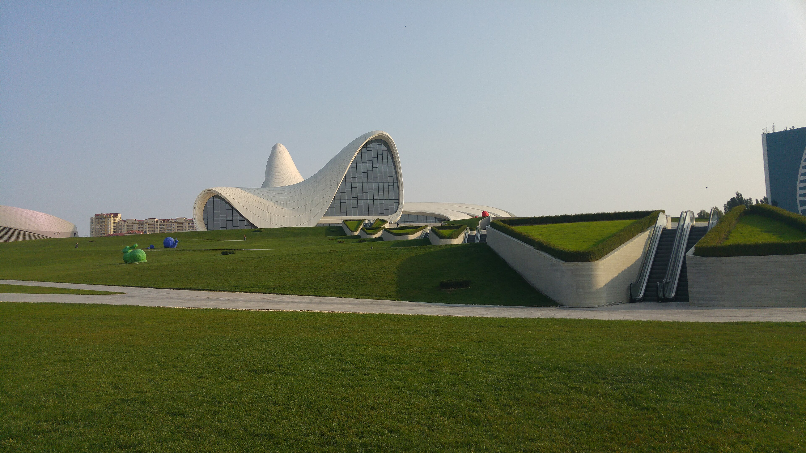
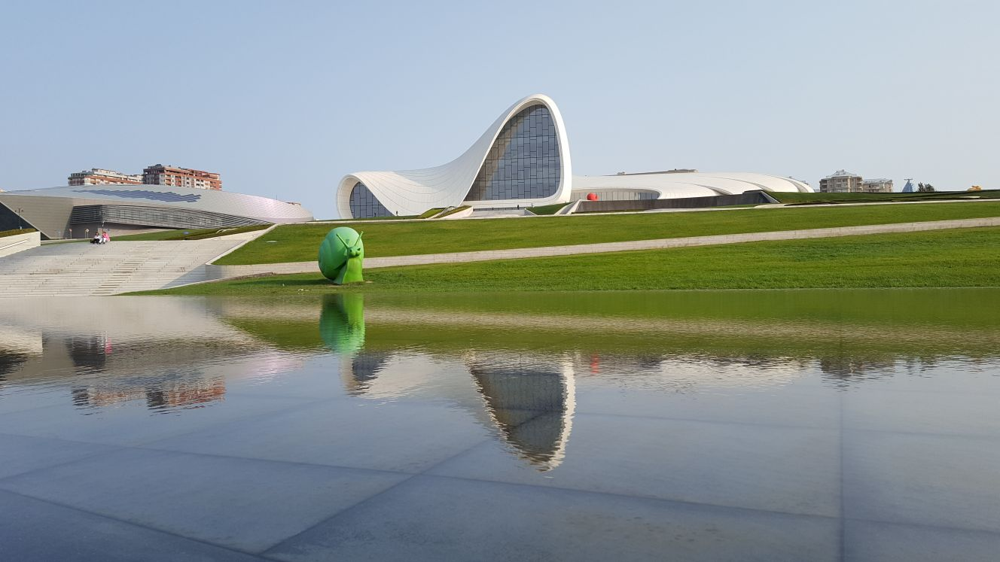
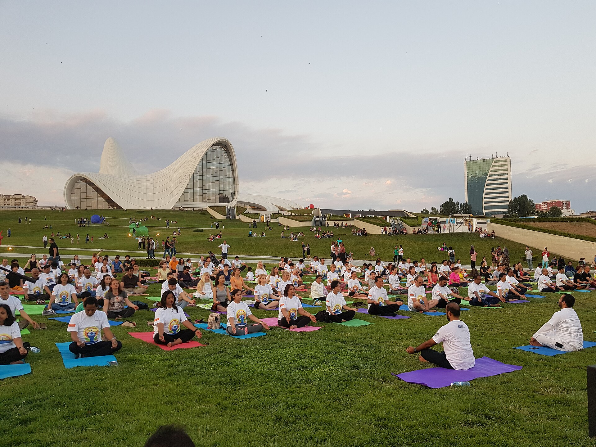
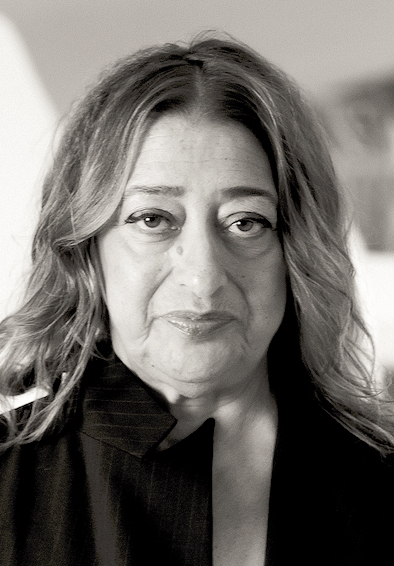

/01
Estructura de acero
Esqueleto espacial de acero soldado, calculado por elementos finitos. Asume todas las cargas del envolvente curvo y permite voladizos extremos sin pilares visibles.
≈ 12.000 t · acero estructural
Zaha Hadid Architects · Bakú, Azerbaiyán.
57.500 m² sin un solo ángulo recto.
Reproducción tridimensional al detalle, gemela del modelo impreso para la maqueta. Arrastra · rueda · pellizca.
No hay curvas estáticas en la naturaleza. Todo fluye.
Centro cultural de 57.500 m² en Bakú. Una superficie continua que nace del suelo y vuelve a él.
En 2007, Zaha Hadid Architects gana el concurso internacional convocado en honor al tercer Presidente azerbaiyano. Su propuesta no tiene un solo ángulo recto: una superficie continua que emerge del suelo, se pliega en el aire y vuelve a la tierra.
Más de 7.500 paneles únicos en GRC y GFRP forman su piel —ninguno se repite—. Se inaugura el 10 de mayo de 2012, día del cumpleaños de Aliyev. En 2014 el Design Museum de Londres lo declara "Diseño del Año": la primera vez que el premio recae en una arquitecta.

La plaza pública asciende, se pliega como una ola y vuelve a descender. Suelo, muro y techo dejan de ser categorías separadas: son una sola superficie.
Hadid llamó a esta operación "liquefacción del suelo": la disolución de los límites entre lo público exterior y lo institucional interior.

No existe un solo ángulo de 90° en la fachada. Cada panel curva ligeramente hacia el siguiente. Una piel blanca que de día captura la luz y de noche se ilumina desde dentro.
La estructura subyacente es un esqueleto de acero diseñado mediante software paramétrico que calcula nodo a nodo cada panel.

13,58 hectáreas de jardines y senderos. La transición entre exterior e interior es deliberadamente borrosa: el visitante camina por la plaza y, sin advertirlo, ya está dentro.
Una operación recurrente en Zaha Hadid: la arquitectura como paisaje continuo, presente también en el MAXXI de Roma o la Estación de Bomberos de Vitra.
Tres ingredientes hicieron posible la geometría: una estructura espacial de acero, una piel de paneles únicos y un flujo de trabajo paramétrico para coordinar miles de piezas.
Esqueleto espacial de acero soldado, calculado por elementos finitos. Asume todas las cargas del envolvente curvo y permite voladizos extremos sin pilares visibles.
Hormigón reforzado con fibra de vidrio (GRC) en las piezas más pesadas; poliéster reforzado (GFRP) en las de doble curvatura extrema. Cada panel se moldeó por separado.
Geometría desarrollada en Rhino + Grasshopper + BIM. Cada panel y nodo se calculó individualmente y se exportó directamente a fabricación CNC.
Tras la muerte de Heydar Aliyev, tercer Presidente azerbaiyano, el gobierno decide construir un centro cultural en su honor y reserva 13,58 ha en el distrito Narimanov de Bakú.
Concurso abierto entre estudios globales. Zaha Hadid Architects gana por unanimidad con una superficie continua sin ángulos rectos —una topografía construida.
Inicio de excavaciones y cimentación. DIA Holding (Turquía) y Arabtec (Emiratos) asumen el reto de materializar geometrías paramétricas en estructura física real.
Empresas europeas especializadas fabrican más de 7.500 paneles únicos en GRC y GFRP. Cada uno con dimensiones, curvatura y peso distintos: ninguno se repite.
El Presidente Ilham Aliyev preside la ceremonia con Zaha Hadid presente. Fecha elegida: cumpleaños de Heydar Aliyev. Más de un millón de visitantes en su primer año.
El Design Museum de Londres otorga el galardón Design of the Year. Primera vez en la historia que el premio recae en una arquitecta. Hadid pasa al panteón global.

Nacida en Bagdad en 1950, estudió matemáticas en la Universidad Americana de Beirut antes de trasladarse en 1972 a la Architectural Association de Londres. Esa formación dotó a su arquitectura de una precisión geométrica extraordinaria.
Durante los quince años posteriores a la fundación de su estudio en 1980, sus proyectos fueron tachados de "imposibles de construir": solo el software paramétrico permitiría materializarlos. En 2004 se convirtió en la primera mujer en recibir el Premio Pritzker. Falleció en Miami en 2016, dejando un lenguaje propio: el parametrismo.
Capital azerbaiyana a orillas del Caspio, conocida como la "ciudad de los vientos". El Centro se erige sobre la avenida que lleva el mismo nombre.